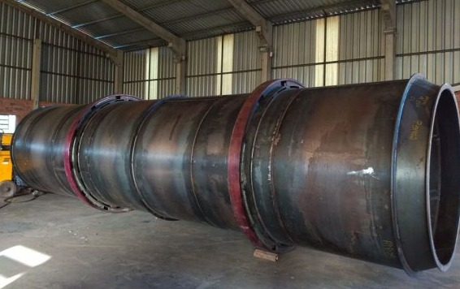
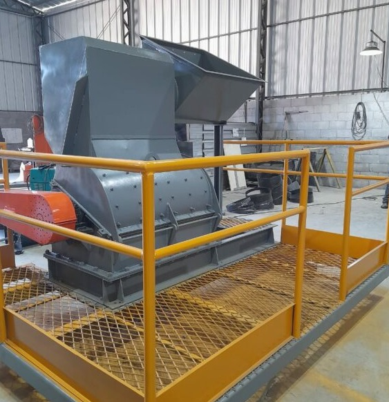
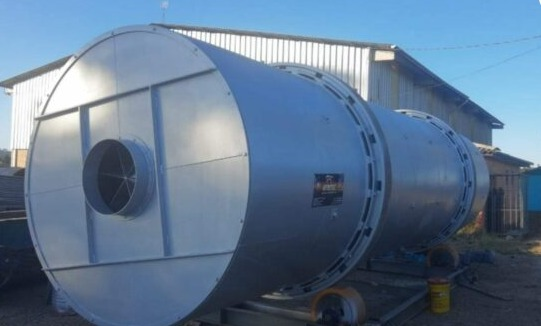
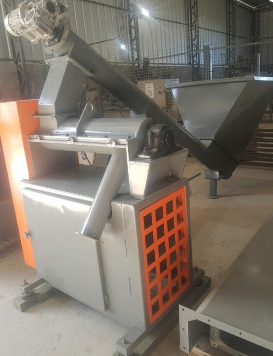

Etapas da Produção
Abaixo descrevemos as principais etapas industriais e tecnológicas da produção da erva-mate na Vivenda do Mate.
Em cada etapa há controle de qualidade, higiene e procedimentos para preservar o sabor, aroma e segurança do produto.
Transporte
O processo industrial da erva-mate começa com o transporte das folhas colhidas até a ervateira, onde caminhões
descarregam o produto no pátio da indústria. Em seguida, a esteira de erva verde realiza o transporte interno
automatizado das folhas até o primeiro equipamento de processamento. Feita de estrutura metálica e correias de
borracha, ela garante higiene, eficiência e fluxo contínuo, evitando perdas e contato com o chão.
Essa automação organiza o processo produtivo, reduz o trabalho manual, aumenta a segurança e permite controlar o
volume de erva conforme a capacidade das máquinas seguintes.
Sapeco
O sapeco é o primeiro processo térmico da industrialização da erva-mate e fundamental para sua qualidade final.
Nele, as folhas passam por um cilindro aquecido entre 400°C e 500°C por poucos segundos, o que inativa enzimas
oxidativas, preservando a cor verde e o sabor característico. O processo também reduz a umidade, elimina
micro-organismos e facilita a trituração.
As sapecadeiras modernas são automatizadas, com controle de temperatura, tempo e rotação, garantindo uniformidade
e padronização na produção.

Trituração
Após o sapeco, a erva-mate passa pelo picador cancheador, que corta e tritura as folhas e galhos em pedaços menores
chamados “canchas”. Esse processo facilita a secagem, pois aumenta a área de contato com o ar quente, garantindo
desidratação uniforme.
Além disso, reduz o volume da erva, melhora o manuseio e evita entupimentos nas máquinas. Os picadores modernos são
feitos de aço resistente e permitem ajustar o tamanho dos cortes conforme o tipo de produto desejado.

Secagem
A secagem é uma etapa essencial e demorada do processo da erva-mate. Após o picador, a erva ainda tem alta umidade,
que é reduzida para 4% a 8% no secador rotativo de 3 passagens. Nesse equipamento, a erva percorre três compartimentos
com ar quente entre 80°C e 120°C, gerado por forno a lenha, gás ou biomassa.
O processo é lento e controlado, garantindo secagem uniforme e preservando o aroma, sabor e textura naturais. Ao final,
a erva sai pronta para a purificação e separação.

Ciclone de descompressão
Durante a secagem e moagem, forma-se muito pó e partículas em suspensão, que são tratados pelo ciclone de
descompressão. Esse equipamento usa força centrífuga para separar o pó do ar, fazendo com que as partículas caiam
para o fundo enquanto o ar limpo é liberado.
O sistema recupera material útil, evita poluição, controla pressão e temperatura do secador e garante segurança e
sustentabilidade, atendendo às normas ambientais e de qualidade industrial.
Moedor
A moagem, ou soca, é a etapa final do processo, feita no atritor, que transforma a erva seca em um pó fino e uniforme.
O equipamento utiliza movimentos de atrito entre discos metálicos para ajustar a granulometria conforme o tipo de
produto (chimarrão, tereré ou chá).
Com controle eletrônico de rotação, pressão e temperatura, o atritor garante textura, cor e aroma homogêneos. Depois,
a erva é pesada e empacotada, encerrando o processo com eficiência e qualidade industrial.
